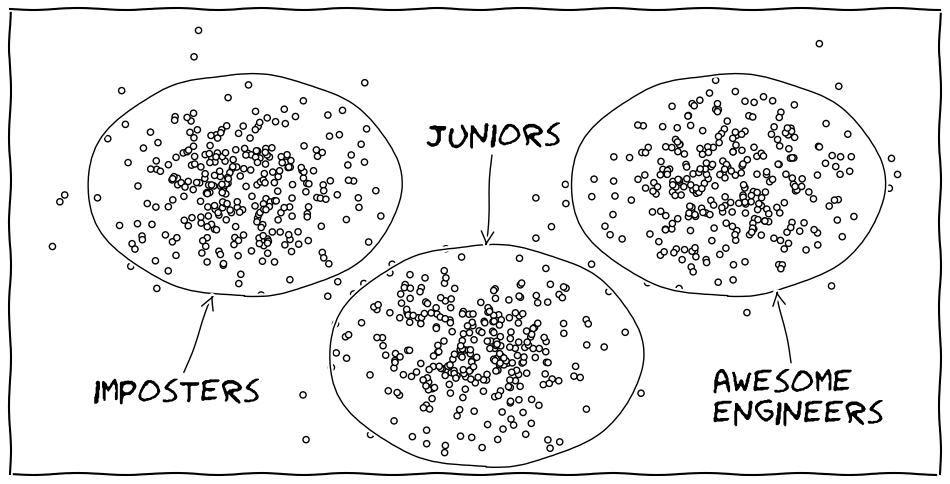
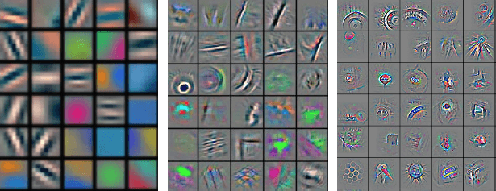
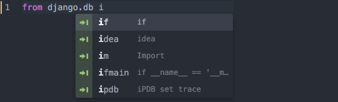

Source code abstracts classification using CNN
Vadim Markovtsev, source{d}

Plan
- Motivation
- Source code feature engineering
- The Network
- Results
- Other work
Motivation
Everything is better with clusters.

Motivation
Customers buy goods, and software developers write code.
Motivation
So to understand the latter, we need to understand what and how they
do what they do. Feature origins:
- Social networks
- Version control statistics
- Source code
- Algorithms
- Dependency graph
- Style
Motivation

Motivation
Let's check how deep we can drill with source code style ML.
Toy task: binary classification between 2 projects using only the data with
the origin in code style.
Feature engineering
Requirements:
- Ignore text files, Markdown, etc.
- Ignore autogenerated files
- Support many languages with minimal efforts
- Include as much information about the source code as possible
Feature engineering
(1) and (2) are solved by
github/linguist
...source{d} has it's own, just no Python bindings exist at the moment
- Used by GihHub for language bars
- Supports 400+ languages

Feature engineering
(3) and (4) are solved by

- Highlights source code (tokenizer)
- Supports 400+ languages (though only 50% intersects with
github/linguist)
- ≈90 token types (not all are used for every language)
Feature engineering
Pygments example:
# prints "Hello, World!"
if True:
print("Hello, World!")
# prints "Hello, World!"
if True:
print("Hello, World!")
Feature engineering
Token.Comment.Single '# prints "Hello, World!"'
Token.Text '\n'
Token.Keyword 'if'
Token.Text ' '
Token.Name.Builtin.Pseudo 'True'
Token.Punctuation ':'
Token.Text '\n'
Token.Text ' '
Token.Keyword 'print'
Token.Punctuation '('
Token.Literal.String.Double '"'
Token.Literal.String.Double 'Hello, World!'
Token.Literal.String.Double '"'
Token.Punctuation ')'
Token.Text '\n'
Feature engineering

Feature engineering
- Split stream into lines, each line contains ≤40 tokens
- Merge indents
- "One against all" with value length
- Some tokens occupy more than 1 dimension, e.g.
Token.Name reflects naming style
- About 200 dimensions overall
- 8000 features per line, most are zeros
- Mean-dispersion normalization
Feature engineering
Though extracted, names as words may not used in this scheme.
We've checked out two approaches to using this extra information:
- LSTM sequence modelling (link to presentation)
- ARTM topic modelling (article in our blog)

Feature engineering

The Network
| layer |
kernel |
pooling |
number |
| convolutional |
4x1 |
2x1 |
250 |
| convolutional |
8x2 |
2x2 |
200 |
| convolutional |
5x6 |
2x2 |
150 |
| convolutional |
2x10 |
2x2 |
100 |
| all2all |
|
|
512 |
| all2all |
|
|
64 |
| all2all |
|
|
output |
The Network
| Activation |
ReLU |
| Optimizer |
GD with momentum (0.5) |
| Learning rate |
0.002 |
| Weight decay |
0.955 |
| Regularization |
L2, 0.0005 |
| Weight initialization |
σ = 0.1 |
The Network
- Merge all project files together, feed 50 LOT (lines of tokens) as a
single sample.
- Does not converge without random shuffling files (sample borders are
of course fixed).
- Batch size is 50.
- Truncate projects by the smallest LOT.
- Fragile to small metaparameter deviations.
The Network
- Python3 / Tensorflow / NVIDIA GPU
- Preprocessing is done on Dataproc (Spark)
- Database of features is stored in Cloud Storage
- Sparse matrices ⇒ normalization on the fly
Results
| projects |
description |
size |
accuracy |
| Django vs Twisted |
Web frameworks, Python |
800ktok each |
84% |
| Matplotlib vs Bokeh |
Plotting libraries, Python |
1Mtok vs 250ktok |
60% |
| Matplotlib vs Django |
Plotting libraries, Python |
1Mtok vs 800ktok |
76% |
| Django vs Guava |
Python vs Java |
800ktok |
>99% |
| Hibernate vs Guava |
Java libraries |
3Mtok vs 800ktok |
96% |
Results
Conclusion: the network is likely to extract internal similarity in
each project and use it. Just like humans do.
If the languages are different, it is very easy to distinguish projects
(at least because of unique token types).
Results

Results
Problem: how to get this for a source code network?

Other work
GitHub has ≈6M of active users (and 3M after reasonable filtering).
If we are able to extract various features for each, we can cluster
them. Visio:
- Run K-means with K=45000 (using
src-d/kmcuda)
- Run t-SNE to visualize the landscape
BTW, kmcuda implements
Yinyang k-means.
Other work
Before:
After:

Thank you
We are hiring!

We are hiring!